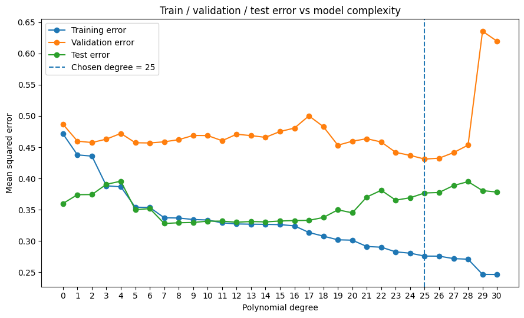
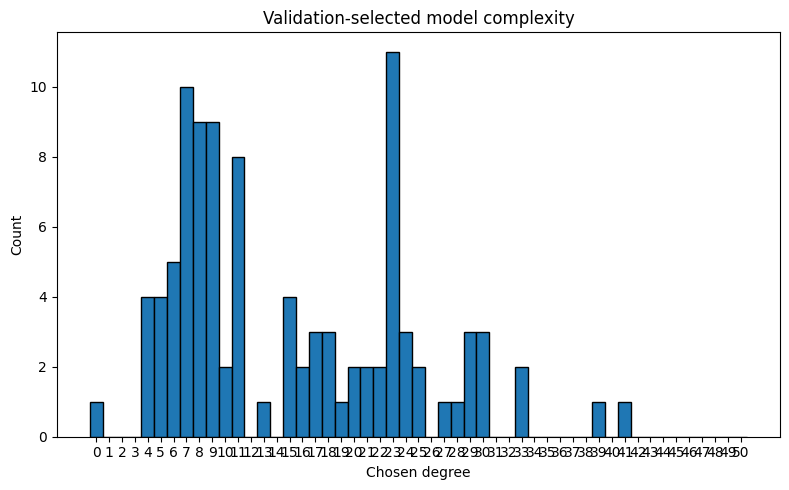
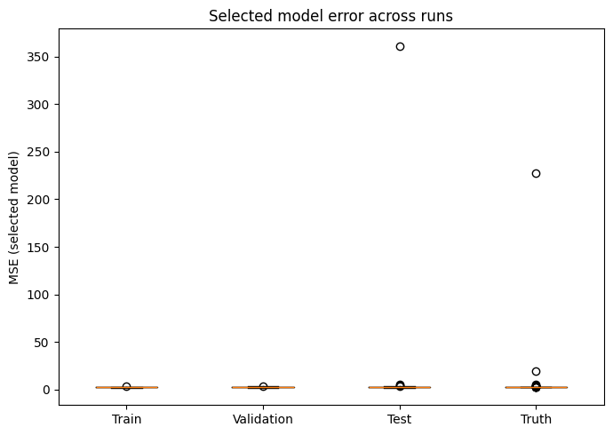
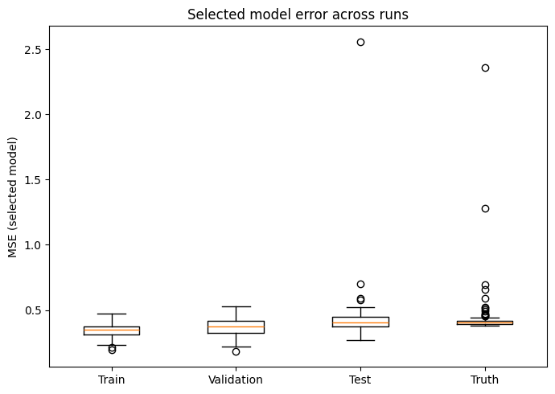

So far we have essentially been talking aobut evaluating a fixed model form\(A\). Up to this point, the story has been:
we train a model \(\hat f = A(D_{train})\)
we evaluate it using some metric \[
\hat{\text{Perf}}(D_{eval}, \hat f)
\]
we interpret this as an estimate of performance on new data
Either we tried to estimate the performance of \(\hat{f}\), or more likely, we estimating the performance of \(A\).
However, in practice, we are almost never given a single model. Instead, we have:
many possible models
many choices of differnent knobs, parameters, arguments, “hyperparameters”
For example:
different polynomial degrees
different model classes altogether
different values of regularization (later)
So the real question becomes: Which model should we use?
We are using performance to make decisions. This comes with some caveats we must pay attention to. Most prominently: Once we use performance to make decisions, it is no longer just an unbiased measurement. The evaluation metric is now guiding model selection and influencing which model we end up with. So, in essence, it becomes part of the training process itself.
8.1 From evaluation to selection
Suppose we have a family of algorithms: \[
\{ A_\lambda : \lambda \in \Lambda \}
\]
Instead of a single algo, we now have a collection of candidates indexed by a parameter \(\lambda\). (Here, \(\lambda\) is just indexing all the various choices we could make). For example, \(\lambda\) could represent:
polynomial degree
number of features
or even entirely different model classes
other things like regularization, tree depth, neighbors, we’ll discuss later for particular algorithms.
Our goal is to choose \(\lambda\) that gives best performance.
More concretely, we want to find the value of \(\lambda\) that leads to a model with the best generalization performance (i.e., performs best on new, unseen data). Honestly, the difference between selecting the meta parameter \(\lambda\) and tuning, e.g., weights \(w\) within the algorithm is less imporant. They are both part of the model building process.
In some sense, you are now defining a meta-algorithm. Previously, we had:
a learning algorithm \(A\)
which takes data and outputs a model
Now we are building a higher-level procedure that. For example:
Select the best parameters:\[
\hat\lambda = \arg\min_\lambda e_\lambda
\]
Retrain the final model:\[
\hat f = A_{\hat\lambda}(D)
\]
and it outputs the final model \(\hat f\).
The “learning algorithm” is no longer just \(A\), but the entire pipeline \(\mathcal{P}\)including \(D_{eval}\).
8.2 Can we trust \(D_{eval}\) now?
Once \(\hat f\) depends on the evaluation data (through \(\hat \lambda\)), we can no longer treat that data as independent for evaluation. Previously, we required: \[
D_{eval} \perp \hat f
\] so that evaluation behaved like performance on new data.
So the evaluation dataset is no longer just being observed, it is being used to make decisions via \(\hat\lambda\), and \(\hat\lambda\) depended (however strongly) on \(D_{eval}\).
We run into all the same problems we just discussed with evaluation. Its potentially true that \(\hat{\text{Perf}}(D_{eval}, \hat f_{\hat\lambda})\) is an overly optmistic estimate of performance. Its “seen” the evaluation data. How big of a problem is it? It depends on “how independent” \(D_{eval}\) is from the final model. This comes back to our discussion on model capacity and flexibility:
How flexible is the model family \(\Lambda\)?
How many choices did we try?
How aggressively did we optimize over \(\lambda\)?
If:
the space \(\Lambda\) is small
the models are not very flexible
we didn’t try too hard to optimize performance over \(\lambda\)
then the dependence on \(D_{eval}\) may be weak, and the bias may be small.
But if:
\(\Lambda\) is large
the models are highly flexible
we search aggressively over many options
then we are effectively overfitting to the evaluation set.
8.3 Three-way split train/validation/test
To resolve this issue, we introduce a third dataset:
\(D_{train}\) → fit models
\(D_{validation}\) → select \(\lambda\)
\(D_{test}\) → final evaluation
Why? The validation set is now part of the training procedure (via selection). Once we use \(D_{val}\) to choose \(\hat\lambda\), the final model \(\hat f\) depends on it. So we are back in the same situation as before:
\[
D_{val} \not\perp \hat f
\]
which means \(D_{val}\) is no longer valid for unbiased evaluation.
The solution is actually relatively simple: Use a completely separate dataset that is never used during training or selection. That dataset is \(D_{test}\). This will ensure that \[
D_{test} \perp \hat f
\]
so that evaluation on \(D_{test}\) behaves like performance on new data.
The full procedure now looks like this:
Train models on \(D_{train}\)
For each \(\lambda\): \[
\hat f_\lambda = A_\lambda(D_{train})
\]
\[
\hat f = A_{\hat\lambda}(D_{train} \cup D_{val})
\]
We now use all available data (except the test set) to fit the final model.
Evaluate once on \(D_{test}\)
\[
\hat{\text{Perf}}(D_{test}, \hat f)
\]
The important idea is that the test set is used once, at the very end. It is never used to:
choose \(\lambda\)
compare models
tune anything
Splitting into \(D_{train}\), \(D_{val}\), and \(D_{test}\) can feel like a bit of a hack, and in some sense, it is.
You can equivalently think of it as first split into train/test, and then, within the training process, split the training data again into train/validation.
Concretely:
Split: \[
D = (D_{train}^{(full)}, D_{test})
\]
During model selection, further split: \[
D_{train}^{(full)} = (D_{train}, D_{val})
\]
So the “three-way split” is really just a way of organizing the requirement that evaluation data must remain independent of the model whenever we’re doing evaluation.
The key issue in model selection is not the evaluation metric itself, but how it interacts with the selection step. For any fixed \(\lambda\), the evaluation is a valid estimate of performance, because the data \(D_{val}\) is independent of \(\hat f_\lambda\). So taken one at a time, each model is evaluated correctly. However, when we optimize over \(\lambda\) we introduce a coupling between the final model and the evaluation data. The choice of \(\hat\lambda\) is not arbitrary, it depends directly on how each model performs on \(D_{val}\). So the final model is no longer independent of \(D_{val}\). So individually the estiamtes are ok, but if our building procedure selects based on \(D_{val}\) then evaluation on that set is not longer unbiased.
8.4 Nested cross-validation
The train/validation/test split solves the problem conceptually, but it can be inefficient when data is limited. One way around this is to use what is often called nested cross-validation. (This is really just a dressed-up version of cross-validation we already know.)
Previously, we described a simple approach:
split data into train / validation / test
use validation for model selection
use test for final evaluation
We also noted that this can be viewed as: first doing a train/test split, and then splitting the training data again into train/validation.
Let’s call:
the first split → the outer split
the second split → the inner split
Nested cross-validation is essentially a refinement of this idea. Instead of performing the outer and inner splits just once, we perform them multiple times using cross-validation.
We can package ordinary cross-validation into a procedure: \[
\texttt{cross\_validate}(D, A)
\]
that takes a dataset \(D\) and algorithm \(A\), and returns an estimated performance for a fixed learning algorithm.
For example, in \(k\)-fold cross-validation:
Partition the dataset \(D\) into \(k\) disjoint subsets (folds): \(D_1, \dots, D_k\)
Return a summary, e.g. the average: \[
\texttt{cross\_validate}(D, A)
=
\frac{1}{k} \sum_{j=1}^k \hat{\text{Perf}}(D_{eval}^{(j)}, \hat f^{(j)})
\]
8.4.1 Stepping stone
Now, given our overall data \(D\), suppose we do this:
Split the data into outer train-val and outer test\[
D = (D_{train\text{-}val}, D_{test})
\]
For each \(\lambda\), estimate performance on the outer training portion
For each \(\lambda \in \Lambda\): \[
e_\lambda = \texttt{cross\_validate}(D_{train\text{-}val}, A_\lambda)
\]
Select the best \(\lambda\)\[
\hat\lambda = \arg\min_\lambda e_\lambda
\]
Retrain the final model on all of \(D_{train\text{-}val}\)\[
\hat f = A_{\hat\lambda}(D_{train\text{-}val})
\]
Evaluate once on the outer test set\[
\hat{\text{Perf}}(D_{test}, \hat f)
\]
This is already the basic nested idea:
use cross-validation inside \(D_{train\text{-}val}\) to choose \(\lambda\)
then evaluate the resulting model on a separate outer test set
8.4.2 Next complication
We do not have to do just one outer train-val / test split. We can do this multiple times as well.
So let us package the above model-selection-and-retraining steps into a procedure \[
\texttt{inner\_cv\_fit}(D_{train\text{-}val})
\] which returns the fitted model \[
\hat f = A_{\hat\lambda}(D_{train\text{-}val})
\] where \(\hat\lambda\) was chosen by cross-validation inside \(D_{train\text{-}val}\).
Now we can perform cross-validation again at the outer level:
Partition the overall dataset \(D\) into \(k\) disjoint subsets (folds): \(D_1, \dots, D_k\)
For each \(j = 1, \dots, k\):
define \(D_{test}^{(j)} = D_j\)
define \(D_{train\text{-}val}^{(j)} = D \setminus D_j\)
Then at the end, return a summary, e.g. the average: \[
\frac{1}{k} \sum_{j=1}^k \hat{\text{Perf}}(D_{test}^{(j)}, \hat f^{(j)})
\]
The key point is:
The inner loop is used for model selection, while the outer loop is used for final performance estimation.
This preserves the separation between:
data used to choose the model
data used to evaluate the final procedure
What are we estimating? We’re now estimating the performance of the inner_cv_fit procedure.
8.5 Nested CV Pseudo-code
Show code
def cross_validate(D, A, k):""" Input: D : dataset A : fixed learning algorithm k : number of folds Output: estimated performance of A on D """ split D into k folds: D_1, ..., D_k perf_values = []for j in {1, ..., k}: D_eval = D_j D_train = D \ D_j f_hat = A(D_train) perf_j = Perf_hat(D_eval, f_hat) append perf_j to perf_valuesreturn average(perf_values)def inner_cv(D_train_val, {A_lambda : lambdain Lambda}, k_inner):""" Input: D_train_val : dataset used for model selection {A_lambda} : family of learning algorithms indexed by lambda k_inner : number of inner folds Output: final fitted model after selecting lambda """ perf_by_lambda = {}forlambdain Lambda: e_lambda = cross_validate(D_train_val, A_lambda, k_inner) perf_by_lambda[lambda] = e_lambda lambda_hat = argmin_lambda perf_by_lambda[lambda]# retrain on all of D_train_val using the selected lambda f_hat = A_lambda_hat(D_train_val)return f_hatdef nested_cross_validate(D, {A_lambda : lambdain Lambda}, k_outer, k_inner):""" Input: D : full dataset {A_lambda} : model family k_outer : number of outer folds k_inner : number of inner folds Output: estimated performance of the full model-selection procedure """ split D into k_outer folds: D_1, ..., D_k_outer outer_perf_values = []for j in {1, ..., k_outer}: D_test = D_j D_train_val = D \ D_j# perform model selection inside the training portion f_hat_j = inner_cv(D_train_val, {A_lambda : lambdain Lambda}, k_inner)# evaluate on the held-out outer test fold perf_j = Perf_hat(D_test, f_hat_j) append perf_j to outer_perf_valuesreturn average(outer_perf_values)
CellIn[3], line 10split D into k folds: D_1, ..., D_k
^
SyntaxError: invalid syntax
8.6 Examples in code
8.6.1 Simple train/val/test
First, lets show a simulation of what happens when we do a simple train/val/test split
Show code
import numpy as npimport matplotlib.pyplot as pltfrom sklearn.pipeline import make_pipelinefrom sklearn.preprocessing import PolynomialFeaturesfrom sklearn.linear_model import LinearRegressionfrom sklearn.metrics import mean_squared_error
# Three-way splitx_train, y_train, _ = make_data(n=250, rng=rng)x_val, y_val, _ = make_data(n=100, rng=rng)x_test, y_test, _ = make_data(n=100, rng=rng)max_degree =30degrees = np.arange(max_degree +1)train_mse = np.zeros_like(degrees, dtype=float)val_mse = np.zeros_like(degrees, dtype=float)test_mse = np.zeros_like(degrees, dtype=float)# Fit one model per degree using only the training setfor i, degree inenumerate(degrees): model, tr_mse, va_mse = fit_poly_and_compute_mse( x_train, y_train, x_val, y_val, degree=degree )# Compute test error too, but do not use it for model selection yhat_test = model.predict(x_test.reshape(-1, 1)) te_mse = mean_squared_error(y_test, yhat_test) train_mse[i] = tr_mse val_mse[i] = va_mse test_mse[i] = te_mse# Select degree using validation error onlybest_degree =int(degrees[np.argmin(val_mse)])
Show code
print(f"Best degree by validation error: {best_degree}")print(f"Training MSE at best degree: {train_mse[best_degree]:.4f}")print(f"Validation MSE at best degree: {val_mse[best_degree]:.4f}")print(f"Test MSE at best degree: {test_mse[best_degree]:.4f}")
Best degree by validation error: 25
Training MSE at best degree: 1.8879
Validation MSE at best degree: 2.6982
Test MSE at best degree: 2.3815
Show code
# Plot all three curvesplt.figure(figsize=(9, 5.5))plt.plot(degrees, np.log10(train_mse), marker="o", label="Training error")plt.plot(degrees, np.log10(val_mse), marker="o", label="Validation error")plt.plot(degrees, np.log10(test_mse), marker="o", label="Test error")plt.axvline(best_degree, linestyle="--", linewidth=1.5, label=f"Chosen degree = {best_degree}")plt.xlabel("Polynomial degree")plt.ylabel("Mean squared error")plt.title("Train / validation / test error vs model complexity")plt.xticks(degrees)plt.legend()plt.tight_layout()plt.show()

8.6.2 MC simulations
Now let’s simulate things multiple times and look at the median so we can try to get rid of some of the noise effects:
The fact that on average the test and val curves aren’t that different isn’t too surprising. They should estimate the same thing. The difference will arise in when we report the validation error at the value which minimizes this validation error. Let’s plot the error at this minimum value for the various curves.
deg = np.arange(max_degree +1)plt.figure(figsize=(8, 5))bins = np.arange(max_degree +2) -0.5plt.hist(chosen_degrees, bins=bins, edgecolor="black")plt.xticks(np.arange(max_degree +1))plt.xlabel("Chosen degree")plt.ylabel("Count")plt.title("Validation-selected model complexity")plt.tight_layout()plt.show()print(f"Average selected train MSE: {train_selected.mean():.4f}")print(f"Average selected val MSE: {val_selected.mean():.4f}")print(f"Average selected test MSE: {test_selected.mean():.4f}")print(f"Average selected truth MSE: {truth_selected.mean():.4f}")print(f"Average chosen degree: {chosen_degrees.mean():.2f}")

Average selected train MSE: 2.2185
Average selected val MSE: 2.3690
Average selected test MSE: 6.1899
Average selected truth MSE: 5.0445
Average chosen degree: 15.05
Show code
plt.figure(figsize=(7, 5))plt.boxplot( [train_selected, val_selected, test_selected, truth_selected], labels=["Train", "Validation", "Test", "Truth"],)plt.ylabel("MSE (selected model)")plt.title("Selected model error across runs")plt.tight_layout()plt.show()
/tmp/ipykernel_1544805/4070517473.py:3: MatplotlibDeprecationWarning: The 'labels' parameter of boxplot() has been renamed 'tick_labels' since Matplotlib 3.9; support for the old name will be dropped in 3.11.
plt.boxplot(

Show code
plt.figure(figsize=(7, 5))plt.boxplot( [np.log10(train_selected), np.log10(val_selected), np.log10(test_selected), np.log10(truth_selected)], labels=["Train", "Validation", "Test", "Truth"],)plt.ylabel("MSE (selected model)")plt.title("Selected model error across runs")plt.tight_layout()plt.show()
/tmp/ipykernel_1544805/2316345154.py:3: MatplotlibDeprecationWarning: The 'labels' parameter of boxplot() has been renamed 'tick_labels' since Matplotlib 3.9; support for the old name will be dropped in 3.11.
plt.boxplot(

Another useful way to look at this is by looking atoverfitting at the model-selection level by introducing the idea of meta-capacity.
We split data into train, validation, and test sets, fit polynomial models of varying degree on the training data, and then, for each maximum degree K, select the best model from {0, …, K} using validation error. The key variable is K, which controls how many models we are allowed to search over, i.e., the flexibility of the selection procedure itself: something like a meta-capacity.
As K increases, the procedure has more opportunities to find a model that looks good on the validation set, leading to increasingly optimistic validation error.
rng = np.random.default_rng()n_runs =200max_degree =50all_selected_val = []all_selected_test = []all_selected_degree = []# keep one run of the fixed-degree curves for illustrationexample_fixed_val =Noneexample_fixed_test =Nonefor run inrange(n_runs): out = run_one_meta_experiment( max_degree=max_degree, n_train=250, n_val=100, n_test=100, noise_std=1.5, rng=rng, )if run ==0: example_fixed_val = out["fixed_val_curve"] example_fixed_test = out["fixed_test_curve"] all_selected_val.append(out["selected_val_by_K"]) all_selected_test.append(out["selected_test_by_K"]) all_selected_degree.append(out["selected_degree_by_K"])all_selected_val = np.array(all_selected_val)all_selected_test = np.array(all_selected_test)all_selected_degree = np.array(all_selected_degree)K_grid = np.arange(max_degree +1)val_med, val_q25, val_q75 = summarize(all_selected_val)test_med, test_q25, test_q75 = summarize(all_selected_test)deg_med, deg_q25, deg_q75 = summarize(all_selected_degree)
Show code
# which degree tends to get selected as K growsplt.figure(figsize=(9, 5))plt.plot(K_grid, deg_med, label="Median selected degree", linewidth=2)plt.fill_between(K_grid, deg_q25, deg_q75, alpha=0.15)plt.xlabel("Meta-capacity K")plt.ylabel("Selected degree")plt.title("Selected degree as the search space expands")plt.legend()plt.tight_layout()plt.show()# meta-overfitting plotplt.figure(figsize=(9, 5.5))plt.plot(K_grid, val_med, label="Selected validation error", linewidth=2)plt.plot(K_grid, test_med, label="Selected test error", linewidth=2)plt.fill_between(K_grid, val_q25, val_q75, alpha=0.15)plt.fill_between(K_grid, test_q25, test_q75, alpha=0.15)plt.xlabel("Meta-capacity K (search over degrees 0,...,K)")plt.ylabel("MSE of selected model")plt.title("Meta-overfitting from validation-based degree selection")plt.legend()plt.tight_layout()plt.show()# meta-overfitting plot diffplt.figure(figsize=(9, 5.5))plt.plot(K_grid, test_med-val_med, label="Selected error optimism", linewidth=2)plt.xlabel("Meta-capacity K (search over degrees 0,...,K)")plt.ylabel("Optimism selected model")plt.title("Optimism from validation-based degree selection")plt.legend()plt.tight_layout()plt.show()